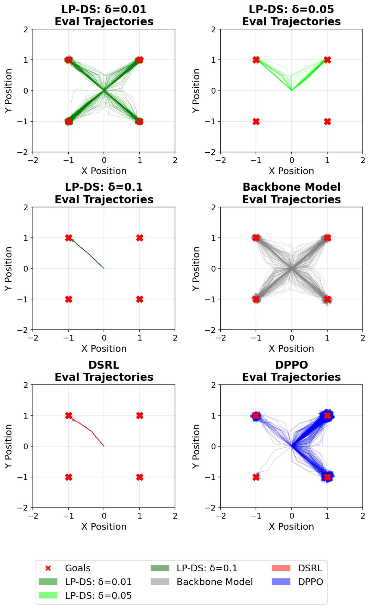
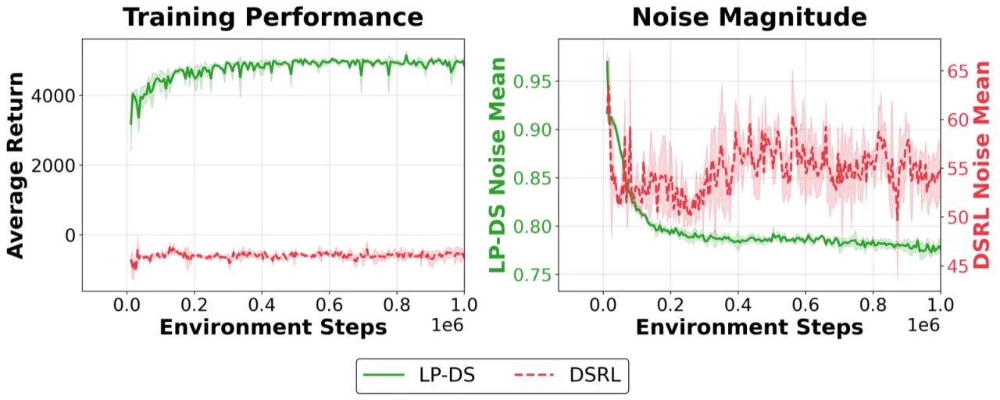
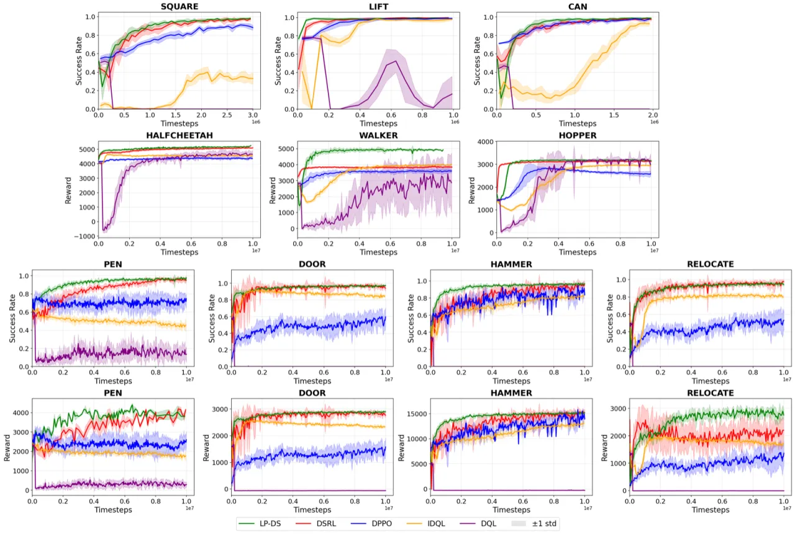
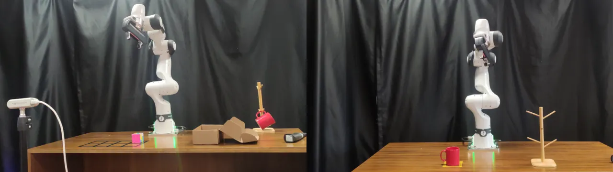
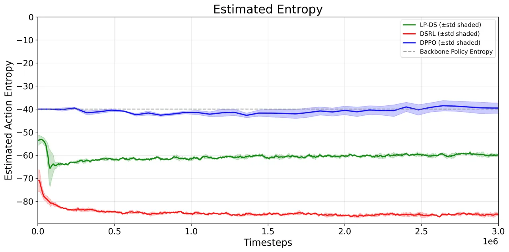
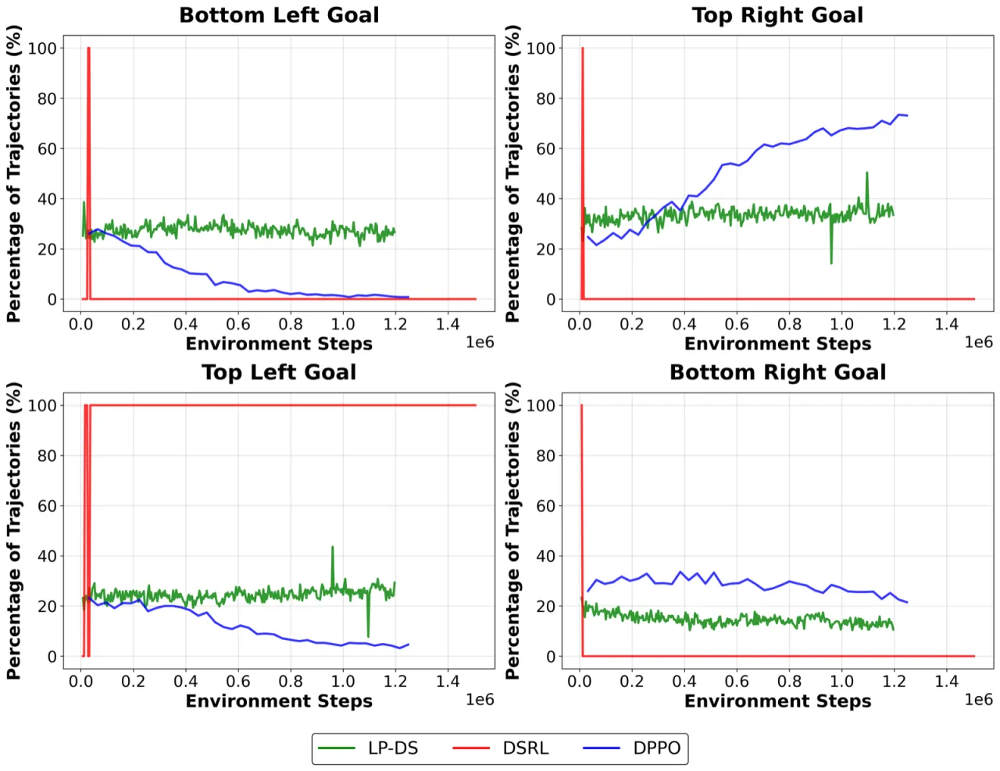

LP-DS 提出了一种轻量级在线适应方法，通过在冻结生成策略的潜在噪声空间中学习一个状态条件残差扰动来提升性能。 该方法使用拉格朗日信任域约束（Lagrangian trust-region）防止潜在查询偏离解码器训练分布， 在保持行为多样性的同时实现有效的策略改进，无需修改底层扩散或流匹配（flow-matching）解码器参数。
基于行为克隆（Behavior Cloning）的高容量生成策略在模仿学习中表现优异，但受限于演示数据覆盖范围不足以及分布偏移问题。 直接用强化学习（RL）微调大型生成解码器往往不稳定且样本效率低下。 已有的噪声空间引导方法 DSRL 虽能绕开解码器修改，却存在潜在查询漂移和行为模式坍塌两大缺陷。
"LP-DS shifts Gaussian noise inputs via w = ε + Δθ(s) and optimizes Δθ with a Lagrangian trust-region objective that improves downstream value while limiting deviation from the latent prior."

DSRL 用无约束潜在策略替代预训练先验（prior），导致生成的噪声向量偏离解码器训练时所用的标准高斯分布支撑集， 引发不规则动作输出和性能退化。图2 清晰展示了这一现象：DSRL 预测出高幅值潜在查询， 与解码器不稳定行为高度相关。
无约束的潜在空间优化会将概率质量集中到少数高奖励区域， 骨干策略的多模态结构（multimodal structure）随之消失。 LP-DS 通过拉格朗日信任域机制显式约束扰动幅度，防止过度激进的模式集中。

LP-DS 将冻结生成解码器 Φ: S × W → A 视为黑盒，仅学习一个轻量级状态条件残差网络
Δθ: S → W，在采样噪声上添加偏移 w = ε + Δθ(s)，
然后通过拉格朗日松弛（Lagrangian relaxation）进行约束优化，
使得扰动在提升下游值函数的同时，保持对原始先验分布的接近。
设 Φ 为冻结的确定性生成解码器（扩散或流匹配模型），正常情况下从 ε ~ N(0, I) 采样噪声。 LP-DS 引入可学习扰动网络 Δθ，并按如下方式生成潜在查询：
w = ε + Δθ(s)，其中 ε ~ N(0, I)
当 Δθ(s) = 0 时，策略精确恢复到原始行为克隆分布。 扰动网络是整个系统中唯一需要优化的组件，极大降低了计算成本。
无约束的潜在空间优化会导致 Δθ(s) 幅值无限增大，使 w 偏离标准高斯流形。 LP-DS 将学习问题表述为一个约束优化：在最大化期望 Q 值的同时， 将期望扰动幅值的平方控制在阈值 δ 以内（该约束来自 KL 散度的二阶近似）：
maxθ E[QW(s, ε + Δθ(s))] s.t. E[‖Δθ(s)‖²] ≤ δ
通过引入拉格朗日乘子 α ≥ 0，形成如下拉格朗日函数，并交替更新 θ（梯度上升）和 α（投影对偶梯度上升）：
L(θ, α) = E[QW(s, w) − α(‖Δθ(s)‖² − δ)]
当扰动超出信任域时 α 自动增大，强迫 actor 优先满足先验约束；当扰动较小时 α 下降，允许更激进的引导。 这一自适应正则化机制是 LP-DS 区别于 DSRL 的核心所在。
LP-DS 维护两个 critic：动作空间 critic QA（通过 TD 误差更新）和 潜在噪声空间 critic QW（通过蒸馏 QA 更新）。 actor 的梯度直接作用在潜在空间 critic 上，避免了对高容量解码器进行反向传播的计算开销。 整个在线训练流程见 Algorithm 1。

在 RoboMimic 操控、OpenAI Gym 运动控制、Adroit 灵巧手操控三大基准上， 以及 LIBERO（使用大型视觉-语言-动作模型 π₀ 骨干）和 Franka 真实机器人部署中， LP-DS 全面评估了方法的有效性、泛化性和行为多样性保持能力。
| 环境/基准 | 最强 Baseline | LP-DS | 提升 |
|---|---|---|---|
| Walker2D-v2（回报） | ~4000 | ~5000 | ~25% |
| RoboMimic Square（成功率） | DSRL/DPPO | 最高（快速收敛） | 精度敏感任务优势显著 |
| Adroit 灵巧操控 | 各 baseline | 整体最强 | 成功率与回报均领先 |
| LIBERO-90（VLA backbone π₀） | 冻结 π₀ | 显著提升 | 大型 Transformer 骨干可扩展 |
| Franka 拾放（物理机器人） | 18/40（冻结骨干） | 33/40 | +83% 成功次数 |
| Franka 挂杯（物理机器人） | 11/20（冻结骨干） | 17/20 | +55% 成功次数 |

通过 Kozachenko–Leonenko k-NN 动作熵估计器，LP-DS 在在线适应过程中始终保持比 DSRL 更高的动作空间熵， 同时成功率也更高。噪声空间引导方法（LP-DS 和 DSRL）相对冻结骨干均会降低熵， 这是将概率质量集中于高价值噪声区域的固有代价；但 LP-DS 的信任域约束有效减缓了这一过程。 DPPO 直接在动作空间微调，因此熵变化幅度最小，但整体性能通常不及 LP-DS。

在 Adroit Pen 的消融实验中：
对信任域目标 δ 的扫描实验（Hopper、Walker2d、RoboMimic Square、Adroit Relocate）表明： δ > 0.1 均能取得强劲性能；0.35、0.5、0.66 等邻近值表现相近。 δ 主要充当粗粒度行为旋钮而非需要精细调节的脆弱超参数。

在 Hopper-v2 上进行的扩散 vs. 流匹配骨干对比实验表明，LP-DS 在两种骨干架构下取得相当的最终性能， 证明残差扰动和信任域框架并不依赖于特定的去噪扩散链，可泛化到连续时间流模型。 在 LIBERO-90 基准上使用大型 π₀ VLA 骨干同样获得显著性能提升， 验证了 LP-DS 可扩展至大型 Transformer 基础模型。
论文指出 δ > 0.1 时方法较为鲁棒，且 0.35、0.5、0.66 等值效果相近， 但对于不同任务和骨干架构，最优 δ 仍需在一定范围内选取。 结论中将"自适应信任域目标"（adaptive trust-region targets）列为未来工作方向。
论文明确指出："Noise-space steering methods (LP-DS, DSRL) exhibit an inherent reduction in entropy relative to the backbone." 虽然 LP-DS 比 DSRL 保留了更多多样性，但相比直接在动作空间微调（DPPO）， 其动作空间熵仍会随训练进行而下降，这是潜在空间模式选择的内在代价。
真实机器人实验（Section 5.7）采用"仿真中进行潜在空间 RL 适应，再迁移到物理机器人"的流程。 这意味着方法在一定程度上依赖高质量的任务匹配仿真器； 在仿真-真实差距（sim-to-real gap）较大的场景中，其性能有多大程度可维持尚不清楚。
论文结论明确将"部分可观测环境"（partially observable）和"大规模视觉-语言-动作设置"（large-scale VLA settings） 列为未来工作方向，暗示当前验证覆盖范围有限，尤其是在需要长时间记忆或复杂感知的场景中。
LP-DS 维护动作空间 critic QA 和潜在空间 critic QW 共两个独立 critic， 以及独立的 actor 和拉格朗日乘子 α 的更新。相比仅有单个 critic 的 DSRL， 每步的计算和存储成本更高，在大规模 VLA 骨干上的实际开销尚未量化报告。